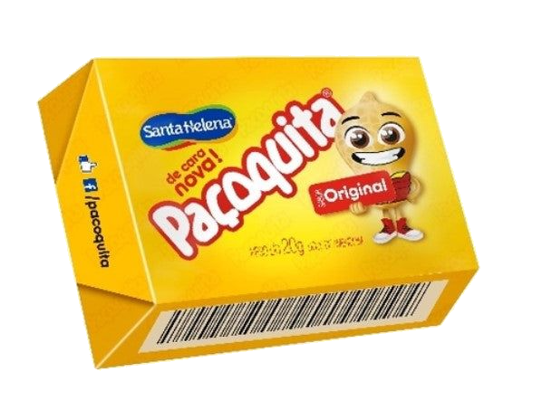

PAÇOQUITA
The best Brazilian candy!
Paçoca is a very famous sweet and one of the most beloved by Brazilians. Tasty, dry and addictive, many people don't know her origin.
The candy served as food for prospectors who went looking for diamonds on the banks of the Tibagi River, in Paraná. It originated in the saddlebags of the tropeiros and the lords of the sesmarias of Campos Gerais. In the beginning, meat paçoca served as food for these garimpeiros, because they walked about 20 days to reach the mining site, and needed a food that could be prepared quickly.
With commercial industrialization, paçoca started to be prepared with other ingredients, reaching the way it is known today: made with peanuts, cassava flour and sugar. Its fame and tasting is immense in several regions of the country, being traditional in parties like São João, birthdays and events.